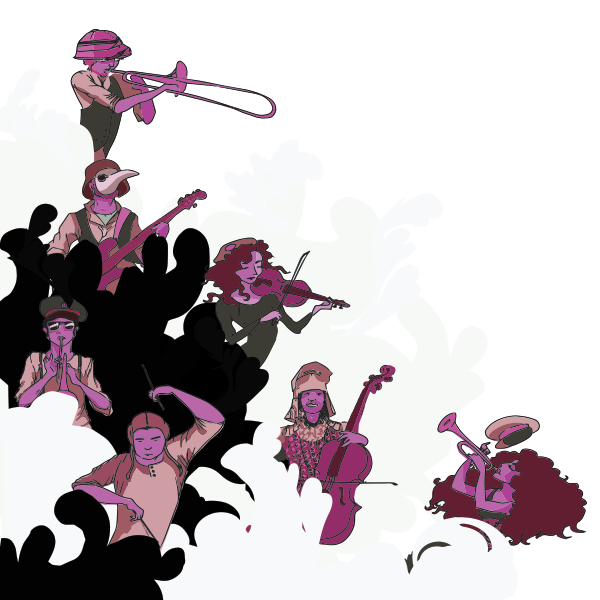

Gigs
Upcoming
-
03 August 2014
Blysh Festival 2014 @ Glanfa Stage, Wales Millennium Centre
- Cardiff
-
08 August 2014
Boomtown 2014
- Matterley Bowl Estate, Winchester
-
30 August 2014
Folkfest 2014
- Burnham-on-Sea
Past
-
29 May 2014
Sunrise Celebration 2014
- Chepstow, Monmouthshire
-
02 May 2014
Troyfest 2014, Baskerville Hall
- Near Hay-On-Wye
-
24 April 2014
Glanfa Stage, Wales Millennium Centre
- Cardiff
-
20 April 2014
The Moon
- Cardiff
-
11 April 2014
Jamboree Venue
- London
-
22 March 2014
Gwdihw
- Cardiff
-
08 March 2014
Mr Wolfs
- Bristol
-
18 December 2013
The Bell Inn
- Bath
-
09 December 2013
The Fleece
- Bristol
-
16 November 2013
Gwdihw
- Cardiff
-
26 October 2013
Voodoo Ball, The Kazimier
- Liverpool
-
24 October 2013
Tipping a Hat To WOMEX Festival @ Four Bars
- Cardiff
-
24 August 2013
AberJazz Festival
- Fishguard
-
16 August 2013
Hurly Burly House Band @ Greenman Festival
- Crickhowell
-
09 August 2013
Supporting We, the Undersigned @ Four Bars
- Cardiff
-
26 July 2013
Gwdihw
- Cardiff
-
01 June 2013
Big Splash Festival
- Newport
-
09 May 2013
Dr Frankenstein's Travelling Freakshow, Chapter Arts Centre
- Cardiff
-
04 May 2013
Troyfest - Baskerville Hall
- Herefordshire
-
09 March 2013
Threshold Festival
- Liverpool
-
08 March 2013
Four Bars
- Cardiff
-
24 January 2013
Wales Millenium Centre
- Cardiff
-
11 January 2013
Gwdihw
- Cardiff
-
09 January 2013
The Bell Inn
- Bath
-
14 December 2012
Private Party
-
-
17 November 2012
The North Star
- Cardiff
-
19 October 2012
Rebel Soul @ The Kazmier
- Liverpool
-
12 October 2012
Bossaphonic @ The Cellar
- Oxford
-
10 October 2012
Riverfront Arts Centre
- Newport
-
05 October 2012
The Yard
- Cardiff
-
2012--08-07
Full Moon
- Cardiff
-
10 August 2012
Brecon Jazz Fringe Festival
- Brecon
-
09 August 2012
The Full Moon
- Cardiff
-
04 August 2012
Cardiff Carnival
- Cardiff
-
13 July 2012
The Big Splash Festival
- Newport
-
21 June 2012
Glasnost Festival @ The Moon
- Cardiff
-
30 May 2012
EP Launch @ 10 Feet Tall
- Cardiff
-
17 May 2012
Dr Frankenstein's Travelling Freakshow @ Brighton Comedy and Arts Festival
- Brighton
-
05 May 2012
Landed Festival
- Powys
-
14 April 2012
The Vulcan Lounge
- Cardiff
-
17 March 2012
The Full Moon
- Cardiff
-
16 March 2012
Supporting Dr Meaker @ The Parrot
- Carmarthen
-
29 January 2012
Supporting The Magic Tobolinos @ 10 Feet Tall
- Cardiff
